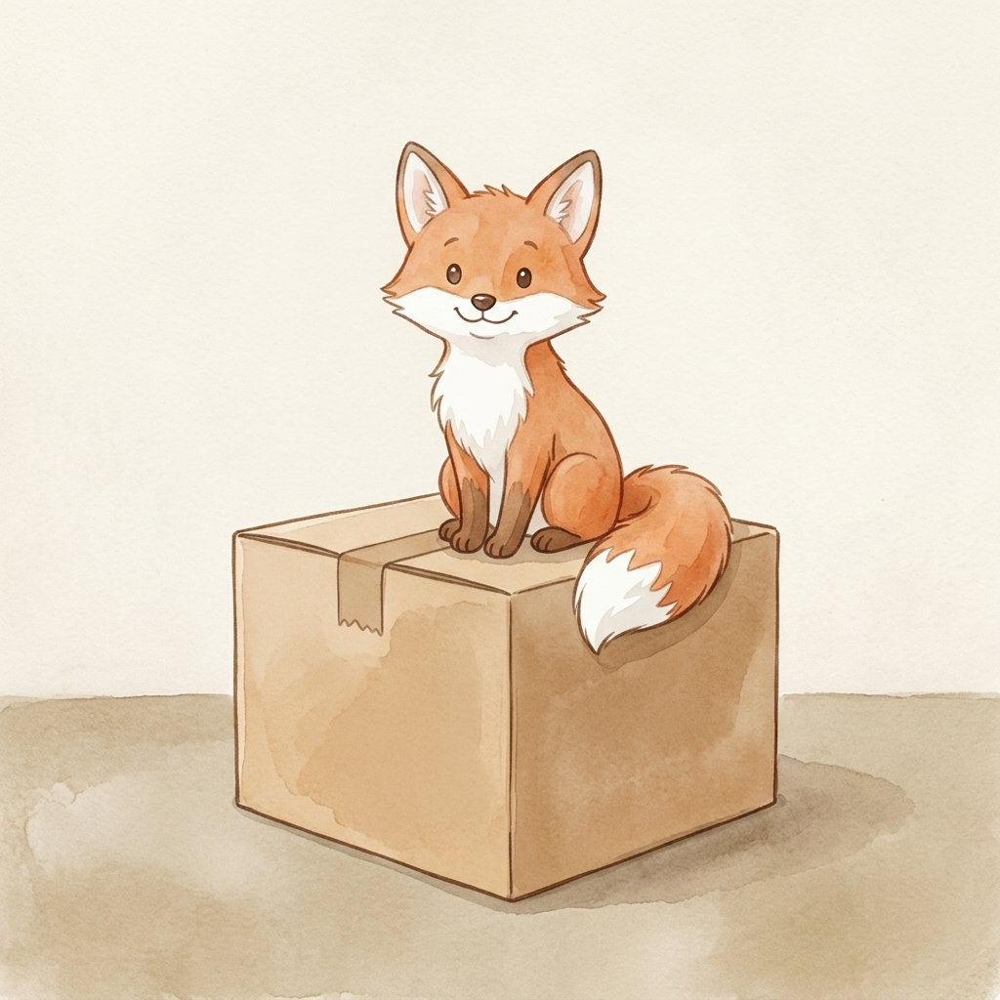

Step 1 · Say the Sound
O
O can say /ŏ/, like fox.
🦊fox
📦box
🔝top
Read short-o words. Then read one tiny story.

O can say /ŏ/, like fox.
Fox has a box.
The box has a top.
Fox got on the box.
Fox sat on top.
You read fox, box, and top.
That’s real reading.
If it still feels fun, read the story one more time.